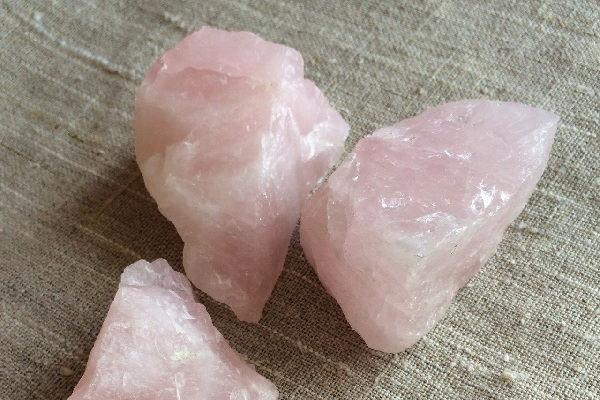
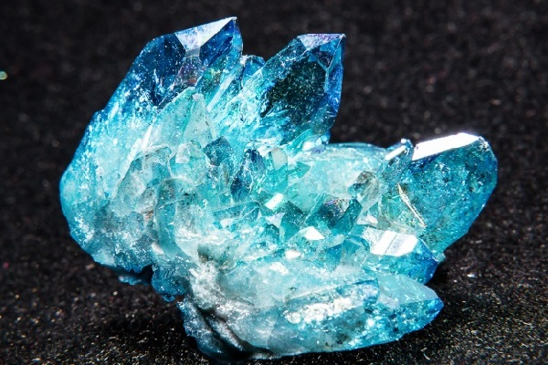
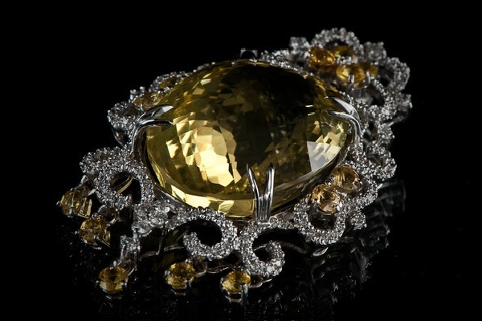

Lime
QUARTZ
Quartz is one of the most common mineralsin the earth's crust of igneous andmetamorphic rocks, it is part of otherminerals and rocks. Silicon dioxide is part.
Chemical composition:SiO2 (polymorphic modification)
Color This mineral can take a variety ofcolors, from red to bright purple and black, including different shades.
The form of quartz is crystalline,brightly struck, sometimes chaotic.
The human benefit of quartz is suchthat quartz is used in industry to produceporcelain and quartz glass.Also used in medical medicine(dentistry, cosmetology).
Interesting facts about quartz:(1) Some precious stones and semiprecious stones are quartz in different colors,which has been formed under different conditions.(2) At the moment, it is known about 22 types of quartz that are used in jewelry.(3) It has antibacterial properties and is therefore used in medecine.



Author: Lime|DF
My Mail: dima3lime3lemon3@gmail.com